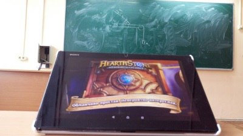
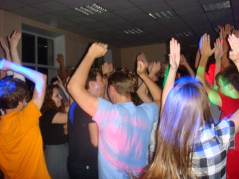
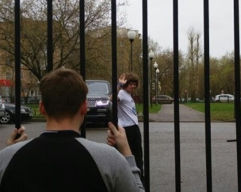

Игры
В этой статье поговорим об отношении сунцов у игрулькам. Конечно, они нещадно сжирают наше время, но на практике в СУНЦе никогда не гамали только жуткие зануды, хотя чем ближе ЕГЭ, тем пустынней выглядят наши игротеки.
Итак, здесь представлены наиболее распространенные тенденции игрового сунца:
Куда уж без неё! Никогда не понимал, что люди в ней находят. Однако, это самая популярная игра в сунце, и я помню времена, когда по ней даже проводились соревнования. Видимо, сунцы её любят за то, что знание математики(хотя в основном сложения и умножения) в ней не бесполезны и игровой баланс на высоте ( киберспорт всё - таки). Однако уделять много времени ей не стоит. К примеру, я знаю человека из своего класса, который потратил на неё 6000 часов! Это 250 дней, а с учётом просмотра стримов и гайдов целый год! Короче, знайте меру.
Простенькая в техническом плане карточная игрушка, быстро набравшая популярность во всём мире. Очевидным плюсом является возможность играть на телефоне и планшете, что спасает во время скучных лекций. Из минусов можно назвать донат. Здесь он хоть и не имбалансный, но позволяет развиваться в разы быстрее. И тут есть антигерои: со мной на этаже живёт парень, который спустил на игру около 5 косарей! Его, кстати, недавно забанили за использование бота. В общем, всегда нужно знать меру.
Иногда выходят игры, которые притягивают к себе народ на короткое время. Так было, к примеру с Ведьмаком, в котором сунцы охотились на нежить около трёх недель, обсуждая свои пути прохождения и местоположение крутого лута.
В итоге, как бы очевидно это не звучало, везде нужно знать меру, особенно перед олимпиадами и ЕГЭ, а то рискуешь остаться у пустого корыта, надеясь за месяц подтянуться до 90-100 баллов со своих 60-80, причём по трём предметам, а некоторые из моих знакомых уже и вовсе потеряли надежду поступить в вуз первого эшелона, не в последнюю очередь из-за чрезмерного увлечения играми.
Дискотека
Дискотека – это слово наполняет счастьем и благоговейным трепетом практически каждого ученика Сунца, конкретнее, человек 30, которые ходят на них. Причём дискотеки не такие уж и плохие...
В распоряжении сунцов есть 3 колонки, стробоскоп и куча стареньких проводов и пультов. Дискотеки обычно проходят с 21:00 до полуночи, хотя в особых случаях её разрешают проводить до 02:00. Место проведения – холл учебного корпуса( в тесноте, да не в обиде). Количества представителей обоих полов примерно равны.Сами сунцы грациозно и плавно размахивают конечностями под громкую ритмичную музыку. Особенно «зашедшие» треки ставят по второму разу минут через 30.
Теперь про медляки: парни разбирают девушек на основе двух параметров: симпатичность и расстояние до объекта. Сам танец представляет собой равномерные покачивания с оборотами вокруг вертикальной оси, при этом нужно постараться не задеть другие пары. Обязательно найдутся два хлопца с крайне оригинальными шутками, которые образуют пару и начнут выделывать па. Количество парней и девушек, отстаивающих у стеночки медляки, по официальной статистике составляет в среднем 11,3%. Если на дискач пришла пара, состоящая в отношениях, то по сунцовскому этикету они танцуют только друг с другом.
Более продвинутые юзеры дискотеки имеют право подойти к диджею и заказать следующий трек, который уж точно раскачает толпу. Всеобщее порицание и изгнание с дискотеки можно получить, задев провод от колонки и остановив музыку. Если на дискаче оказывается именинник, то его друзья, если они есть, отнимут у диджея микрофон и поздравят его, а при наличии физической силы даже будут подкидывать его в воздух, пока их не остановит дежурный воспитатель.
В сухом остатке, дискотеки в сунце долгожданны в узком кругу, но хочется, чтобы круг был шире. Это действительно поднимает настроение и служит своего рода эмоциональной разрядкой. Короче, ходите на дискачи!
Внешний мир
Зазаборный город всегда манил сунцов своими невообразимыми размерами и загадочностью. Он оставляет много непонятных, порой пугающих, вопросов. Почему нельзя оставаться за забором после десяти, когда солнце уже село за горизонт? Что за странные сонные люди, приходящие утром и уходящие вечером, учатся с нами?
Официально за территорию СУНЦа можно выходить с обеда до 20:00, а возвращаться до 22:00, хотя возможны исключения. Эти правила лучше не нарушать: за такое может серьёзно влететь, вплоть до исключения (известны прецеденты). Выходя и входя, нужно отмечаться в специальном журнале, но за этим не больно то и следят, а если запалят, ограничятся устным выговором.
Прежде всего, конечно же, "Пятерочка". Лучше всего подходит для пополнения пищевых запасов. Популярна из-за крайне близкой дислокации и приемлемых цен. Главные конкуренты - "Перекрёсток"(больший ассортимент) и "Дары"(пекарня).
Из торговых центров самым предпочтительным является "Кунцево-Плаза" на станции метро "Молодёжная" в 30-40 минутах ходьбы от СУНЦа. Жирными плюсами является наличие "Ашана" и кинотеатра с приемлемыми ценами. Ближайщий в рейтинге - ТЦ на "Киевской", но пешком до него добираться долго, а кинотеатр существенно дороже.
Из парков можно написать про два, по моему мнению, равноценных. Первый из них - в 5 минутах ходьбы и вроде бы называется "Долина реки Сетунь", хотя все говорят "парк через дорогу". Второй - парк "Фили", обладающий более развитой инфраструктурой, но идти до него придётся около 40 минут.
Вот и всё, что мне удалось разведать, осмеливаясь на вылазки. Ещё нас до недавнего времени вывозили на автобусе, везли к какому-то зданию (я измерял, дорога занимает около 28 минут) и заставляли выполнять какие-то мутные опыты. Конец связи!